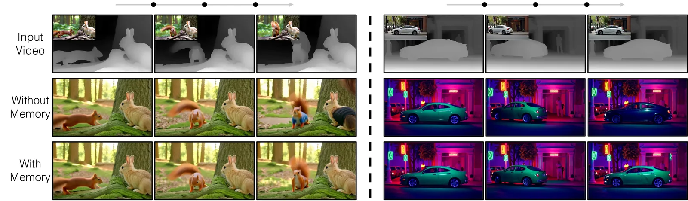
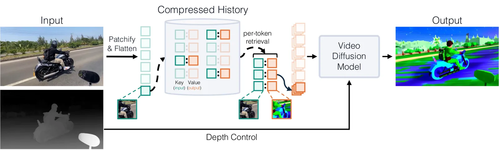
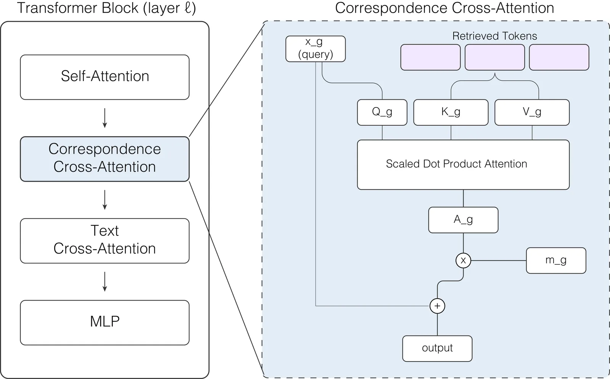

O dilema da consistência de longo alcance em tradução de vídeo
A tradução de vídeo para vídeo (video-to-video) em tempo real é um requisito crítico para aplicações interativas como streaming, jogos e realidade aumentada. Avanços recentes em modelos de difusão de larga escala, seguidos pela destilação em modelos autoregressivos de poucos passos, permitiram gerar vídeos de alta qualidade a velocidades interativas. No entanto, a geração autoregressiva depende de um histórico de quadros passados para garantir a continuidade temporal. O desafio fundamental reside em como manter esse histórico de forma eficiente.
Manter todas as saídas passivas causa um crescimento linear na memória e quadrático no tempo de execução em relação ao comprimento da sequência, o que é proibitivo para aplicações em tempo real. Para contornar isso, muitos métodos recorrem a uma janela deslizante de comprimento fixo. Embora isso garanta um custo computacional constante por quadro, ele sacrifica fundamentalmente a consistência de longo alcance: assim que um objeto sai dessa janela, frequentemente após apenas alguns segundos, o modelo 'esquece' seu conteúdo.
Trabalhos anteriores tentaram preencher essa lacuna de várias maneiras. Alguns usam 'attention sinks' (pontos de atenção) para reter heuristicamente os quadros iniciais como uma âncora global, mas isso não resolve o problema de conteúdo novo que aparece mais tarde. Outros utilizam modelos com estados ocultos aprendidos, como Mamba, que comprimem o histórico em gargalos de tamanho fixo, mas frequentemente sacrificam o poder expressivo dos transformers. Métodos baseados em pose ou representações mundiais explícitas (como nuvens de pontos 3D) lutam para modelar cenas dinâmicas e exigem entradas privilegiadas difíceis de obter.

A ideia central: usar a entrada como índice de memória
Este paper introduz o vid2vid-long, um mecanismo de memória baseado em correspondências que permite consistência de longo prazo enquanto preserva o desempenho em tempo real. A observação fundamental é que a tradução de vídeo para vídeo fornece uma referência cruzada explícita entre quadros: as regiões que correspondem no vídeo de entrada devem corresponder no vídeo de saída.
Em vez de confiar apenas na proximidade temporal (ou seja, apenas nos quadros mais recentes), o método utiliza correspondências explícitas no espaço de entrada para identificar o histórico relevante em qualquer ponto do passado. Se duas regiões correspondem no vídeo de entrada, suas saídas geradas devem ser idênticas. O espaço de entrada serve, portanto, como um índice para recuperar conteúdo gerado anteriormente, permitindo que a consistência seja imposta sem acesso a todo o histórico de saídas.
Concretamente, o sistema calcula correspondências em nível de patch (pequenas regiões da imagem) no vídeo de entrada e as usa para indexar uma representação global comprimida das saídas anteriores. Essa representação cresce apenas quando conteúdo novo aparece, em vez de crescer com o comprimento do vídeo, resultando em um crescimento de memória sub-linear na prática. A abordagem é complementar a estruturas de destilação autoregressiva existentes.
Arquitetura e mecanismo de memória comprimida
O método se baseia em modelos de fluxo (flow-matching) pré-treinados para tradução de vídeo, especificamente o VACE, que opera no espaço latente de um VAE (Variational Autoencoder). O bloco de entrada de pixels é codificado em latentes, que são então particionados em patches não sobrepostos, gerando uma sequência de tokens. Enquanto modelos bidirecionais geram o vídeo inteiro de uma vez, o que é computacionalmente caro, métodos autoregressivos geram blocos temporais condicionalmente nos blocos anteriores.
Para habilitar a geração de longo alcance, o vid2vid-long substitui a atenção causal padrão por um mecanismo de memória explícita. Em vez de manter um cache KV (Key-Value) causal de tamanho fixo, o sistema calcula a similaridade entre os patches da entrada atual e os patches de entrada já vistos. Os patches de entrada atuam como chaves (keys) e os patches de saída correspondentes gerados anteriormente atuam como valores (values).
Quando o modelo processa um novo bloco de quadros, ele recupera os patches de saída anteriores cujas entradas correspondentes são mais similares à entrada atual. Isso permite que o modelo 'lembre' de como gerou uma cena específica no passado, mesmo que essa cena tenha ocorrido há muito tempo, desde que a entrada atual corresponda visualmente à entrada daquele momento. A memória é preenchida com pares de correspondência entrada-saída das gerações anteriores.

Integração com o Transformer via atenção cruzada
A recuperação de patches históricos não é apenas armazenada; ela é usada para condicionar o modelo de geração. Para isso, os autores inserem uma nova camada de atenção cruzada (cross-attention) no transformer padrão. Essa camada de 'correspondência cross-attention' é colocada entre as camadas de autoatenção (self-attention) e a atenção cruzada de texto (text cross-attention), se houver.
Nesta nova camada, os tokens do quadro atual atuam como queries (consultas). As chaves e valores são os patches de saída recuperados da memória histórica. Isso permite que cada token no quadro atual 'olhe' para os patches relevantes do passado que correspondem às suas características visuais na entrada. Essa integração é leve e pode ser aplicada a diferentes backbones autoregressivos, como Self-Forcing, LongLive e Rolling Forcing.
A estratégia de treinamento utiliza o AdamW com um tamanho de lote de 64. Para a recuperação de correspondências, são usados os recursos latentes do codificador VAE como chaves. O sistema recupera k=3 vizinhos mais próximos, com um limiar de história de τh = 0.75 e um limiar de memória de τm = 0.75. Esses limiares ajudam a filtrar recuperações irrelevantes ou de baixa qualidade, garantindo que apenas correspondências fortes sejam utilizadas para condicionar a geração.

Avaliação e resultados quantitativos
Os autores avaliaram o método na tradução de profundidade para vídeo, focando na consistência de longo alcance em vídeos longos. O mecanismo é agnóstico à modalidade de condicionamento, mas os experimentos principais usam o VACE 1.3B como modelo estudante e o VACE 14B como professor. A avaliação foi realizada em dois benchmarks: o VACE-Benchmark, que contém sequências de vídeo do mundo real diversas, e o DL3DV, um conjunto de dados 3D com poses de câmera calibradas que permite avaliar revisitas controladas de viewpoints.
A qualidade do vídeo foi medida usando métricas V-Bench, incluindo consistência do sujeito, consistência do fundo, flickering temporal, suavidade de movimento, qualidade estética e qualidade de imagem. A consistência de longo alcance foi avaliada usando protocolos de revisita controlada. No VACE-Benchmark, sequências longas sintéticas foram construídas intercalando dois clipes distintos (A→B→A→B), e a consistência foi medida entre as ocorrências repetidas do mesmo clipe usando métricas de similaridade como LPIPS, DreamSim e CLIP.
No DL3DV, modelos de 3D Gaussian Splatting foram usados para renderizar revisitas exatas de pose, medindo a consistência entre a primeira visita e a revisita. Os resultados mostraram que a incorporação do mecanismo de correspondência melhorou substancialmente a consistência de longo alcance em todos os cenários testados, enquanto mantinha a velocidade de inferência em tempo real e a alta qualidade visual. O método superou abordagens anteriores que dependiam apenas de janelas deslizantes ou attention sinks.
Comparação com mecanismos alternativos de memória
Um ponto crucial do paper é a comparação com outras estratégias para estender o contexto temporal além da janela deslizante padrão. Os autores testaram aumentar o tamanho do cache KV, reter cada N-ésimo keyframe, manter um cache KV global com média-pooling, usar Attention Sinks e empregar compressão via FramePack.
Enquanto essas abordagens fornecem melhorias parciais, elas sofrem com perda de detalhes ou degradação de qualidade sob revisitas de longo alcance. Por exemplo, o aumento do cache KV aumenta a latência e o uso de memória, violando o requisito de tempo real. O pooling global perde detalhes espaciais finos. O método proposto, baseado em correspondências, permite a reutilização precisa de conteúdo histórico e preserva a consistência sobre horizontes temporais longos sem essas desvantagens significativas.
A tabela 4 ilustra quantitativamente essa superioridade, mostrando que o método recupera com precisão a aparência e a estrutura de objetos que reaparecem no vídeo, enquanto os outros métodos introduzem artefatos ou inconsistências visuais.
Limitações e escopo
Apesar dos resultados promissores, é importante notar o escopo das experiências. A avaliação foca principalmente em tradução de profundidade para vídeo. Embora o mecanismo seja descrito como agnóstico à modalidade, a validação extensiva foi feita nesse contexto. A eficácia em outros tipos de condicionamento, como texto ou controle de pose, pode variar e requer mais investigação.
Além disso, o método depende da qualidade das correspondências calculadas no espaço latente. Se a entrada for extremamente ruidosa ou se houver mudanças drásticas de iluminação ou oclusão que não sejam refletidas de forma clara nos latentes do VAE, a recuperação de patches históricos pode ser imprecisa. O uso de limiares (τh e τm) ajuda a mitigar isso, mas introduz hiperparâmetros que precisam ser ajustados.
Outra consideração é a complexidade de implementação. A inserção de uma camada de atenção cruzada adicional e o processo de recuperação de vizinhos mais próximos adicionam alguma sobrecarga computacional em relação a um modelo autoregressivo puro com janela fixa. No entanto, os autores afirmam que essa sobrecarga é mínima e não compromete a inferência em tempo real, especialmente quando comparada aos custos de manter janelas de contexto muito maiores.
Conclusão
O paper apresenta uma solução robusta para um dos problemas mais persistentes na geração de vídeo autoregressiva: a consistência de longo alcance. Ao explorar a correspondência explícita entre entradas e saídas, o vid2vid-long permite que os modelos 'lembrem' de conteúdo passado de forma seletiva e eficiente.
Os resultados mostram melhorias significativas na qualidade visual e consistência temporal em benchmarks padrão, mantendo a velocidade necessária para aplicações interativas. A abordagem é modular e pode ser integrada a diversos backbones existentes, tornando-a uma contribuição prática para a comunidade de visão computacional e geração de conteúdo.
Embora não seja uma revolução teórica, a simplicidade e eficácia do mecanismo de correspondências o tornam uma ferramenta valiosa para qualquer pipeline de tradução de vídeo que precise lidar com sequências longas. O trabalho abre caminho para futuras investigações sobre como melhorar a recuperação de correspondências em cenários mais complexos e dinâmicos.
O que fica
- Métodos autoregressivos atuais perdem consistência ao longo do tempo devido a janelas de contexto limitadas.
- O vid2vid-long usa a entrada como índice para recuperar saídas anteriores, garantindo que regiões correspondentes sejam geradas de forma idêntica.
- A abordagem é agnóstica ao backbone, melhorando modelos como Self-Forcing e LongLive sem sacrificar velocidade.
- A memória cresce apenas com conteúdo novo, mantendo o uso de recursos sub-linear na prática.
Paper original: Consistent Video-to-Video Translation via Explicit Correspondences
Comentários
Nenhum comentário ainda. Seja o primeiro.